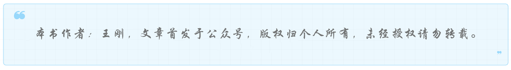
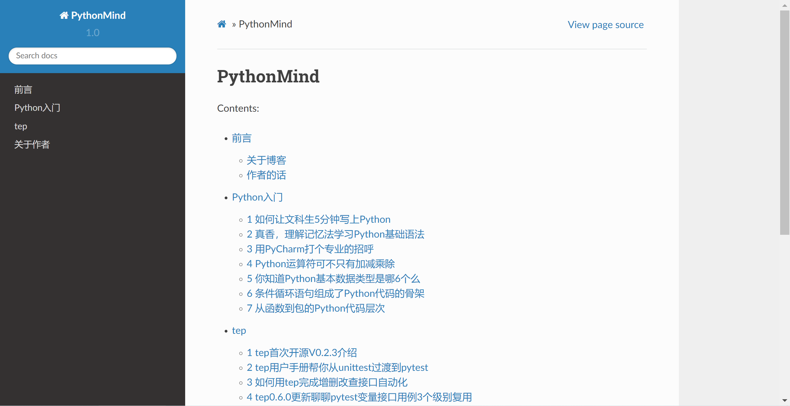

魔法方法推开Python进阶学习大门¶

热爱Python¶
Python是Guido van Rossum设计出来的让使用者觉得如沐春风的一门编程语言。2020年11月12日，64岁的Python之父宣布由于退休生活太无聊，自己决定加入Microsoft的DevDiv Team，致力于“确保更好地使用Python”。尽管在国内有些声音在Diss着Python，认为它太简单，只是个脚本语言，但是它的发明者对Python的热情，仍然激励着我们坚持对Python的热爱。
龟叔是所有编程语言发明者当中头发最多的这位。
奇迹时刻¶
collection.len()是面向对象语言的写法，len(collection)是Python语言的写法，这种风格叫做Pythonic。从前者到后者，就像变魔术一样，一瞬间让人眼前一亮。这个魔术就是Python魔法方法，或者叫双下方法，它是用双下划线开头和双下划线结尾的特殊方法，比如obj[key]，Python解释器实际上会转换成obj.__getitem__(key)来运行，但是使用者并无感知。
__getitem__和__len__¶
__getitem__用来获取数据，__len__用来返回长度，这2个魔法方法是Python基础，我们通过一副扑克牌来了解：
import collections
# 定义一副牌
Card = collections.namedtuple('Card', ['rank', 'suit'])
class FrenchDeck:
# 大小
ranks = [str(n) for n in range(2, 11)] + list('JQKA')
# 花色
suits = 'spades diamonds clubs hearts'.split()
def __init__(self):
# 生成一副牌
self._cards = [Card(rank, suit) for suit in self.suits
for rank in self.ranks]
def __len__(self):
return len(self._cards)
def __getitem__(self, position):
return self._cards[position]
本来我们对这副牌什么都不能做，但是由于实现了__len__，可以使用len()函数查看有多少张牌：
>>> len(deck)
52
由于实现了__getitem__，可以使用中括号索引取值：
>>> deck[0]
Card(rank='2', suit='spades')
能进行切片：
>>> deck[:3]
[Card(rank='2', suit='spades'), Card(rank='3', suit='spades'), Card(rank='4', suit='spades')]
>>> deck[12::13]
[Card(rank='A', suit='spades'), Card(rank='A', suit='diamonds'), Card(rank='A', suit='clubs'), Card(rank='A', suit='hearts')]
能迭代：
>>> for card in deck:
... print(card)
Card(rank='2', suit='spades')
Card(rank='3', suit='spades')
Card(rank='4', suit='spades')
...
发现没有，魔法方法是可以用来装B的！别人写个类只能get、set，你写个类还能花式炫技，666。
Python魔法方法是给Python解释器使用的，一般不需要直接调用，Python会自己去调，比如把
len(my_object)写成my_object.__len__()，就弄巧成拙了。
魔法方法实现运算符¶
前面例子实现了取值和长度，接着再看一个例子，使用__repr__、__abs__、__bool__、__add__、__mul__，实现运算符：
from math import hypot
# 二维向量
class Vector:
def __init__(self, x=0, y=0):
self.x = x
self.y = y
# 表达式
def __repr__(self):
return 'Vector(%r, %r)' % (self.x, self.y)
# 绝对值
def __abs__(self):
return hypot(self.x, self.y)
# 布尔值
def __bool__(self):
return bool(abs(self))
# 加法
def __add__(self, other):
x = self.x + other.x
y = self.y + other.y
return Vector(x, y)
#乘法
def __mul__(self, scalar):
return Vector(self.x * scalar, self.y * scalar)
__add__实现了加法：
>>> v1 = Vector(2, 4)
>>> v2 = Vector(2, 1)
>>> v1 + v2
Vector(4, 5)
__abs__实现了绝对值：
>>> v = Vector(3, 4)
>>> abs(v)
5.0
__mul__实现了乘法：
>>> v * 3
Vector(9, 12)
__repr__实现了对象的字符串表示：
Vector(4, 5)
否则得到的字符串可能是
<Vector object at 0x10e100070>。
__bool__实现了布尔值：
if Vector(4, 5):
return True
Tips¶
本小节内容是我看《流畅的Python》第一遍时记录的知识点：
collections.namedtuple可以用来创建只有少数属性但没有方法的对象，比如beer_card = Card('7', 'diamonds')
random.choice和random.sample不一样的地方在于，sample是返回序列，choice是返回元素，当使用sample(list, 1)[0]的时候，不如直接使用choice(list)。特殊方法的存在是为了被Python解释器调用的。
PyVarObject是表示内存中长度可变的内置对象的C语言结构体。
list或str或bytearray的__len__实际上返回的PyVarObject.ob_size属性，这个比调用一个方法要快的多。len之所以不是一个普通方法，是为了让python自带的数据结构可以走后门，abs也是同理。
很多时候调用__init__方法的目的是，在你自己的子类的__init__方法中调用超类的构造器。
abs，如果输入是整数或者浮点数，它返回的是输入值的绝对值；如果输入是复数，那么返回这个复数的模。
__repr__和__str__二选一的话，__repr__更好，因为如果一个对象没有__str__函数，解释器会用__repr__作为替代。
python对象的一个基本要求就是它得有合理的字符串表示形式，这就是数据模型中存在特殊方法__repr__和__str__的原因。
为了判定一个值x为真还是为假，python会调用bool(x)，它的背后是调用x.__bool__()。如果不存在，就会调用x.__len__()，返回0为Flase，非0为True。
python通过运算符重载这一模式提供了丰富的数值类型，除了内置那些，还有
decimal.Decimal和fractions.Fraction。
小结¶
本文是Python进阶系列开篇，参考《流畅的Python》序章改写而成。原书内容有深度有广度，我选择了其中的魔法方法知识点，作为切入，循序渐进学习。其实书中这一章节的副标题是“数据模型”，它是个什么概念呢？
系列文章会不定期同步到在线电子书中，欢迎访问查看：
